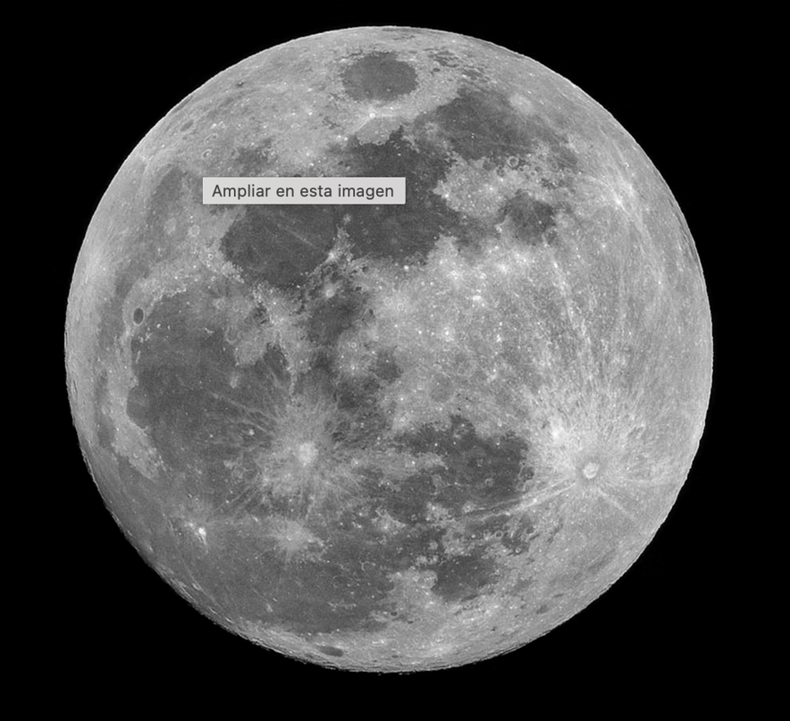
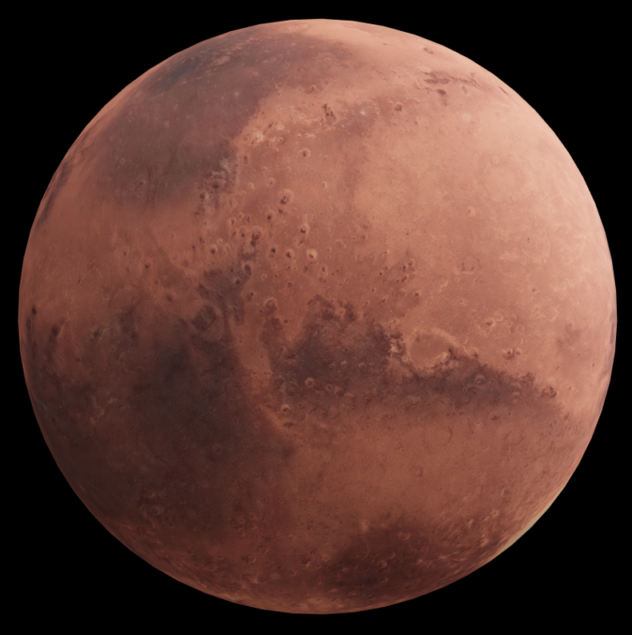
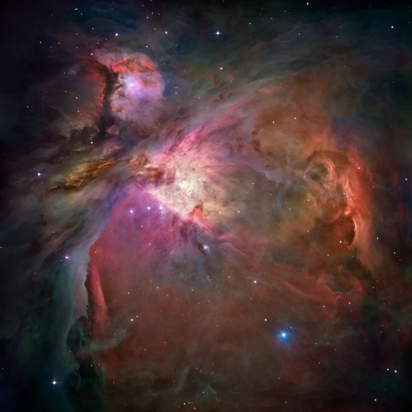

SECTOR 01
0 / 4 SEÑALES

LA LUNA
Accede a la sala lunar del museo para explorar los módulos Apolo, rovers eléctricos, paquetes ALSEP y sondas Surveyor.
Regresando la señal a los héroes olvidados de la exploración espacial

Accede a la sala lunar del museo para explorar los módulos Apolo, rovers eléctricos, paquetes ALSEP y sondas Surveyor.

Visita la exhibición marciana y rescata la telemetría de Sojourner, Spirit, Opportunity, Viking, Phoenix, InSight e Ingenuity.

Explora las naves Dawn, NEAR Shoemaker, Pioneer 10 y 11, y el telescopio cazador de mundos Kepler.